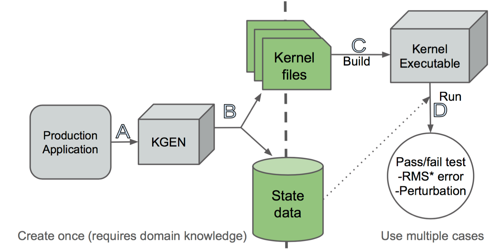

User Guide¶
1. Introduction¶
KGen is a Python tool that extracts Fortran statements from a larger software and combines the extracted statements as a stand-alone application, aka kernel. It also saves input and output data that are used in the kernel for execution and verification purpose.

General workflow for using KGen is shown in following figure. (A)To run KGen, user needs to provide four arguments: a callsite location that specifies which part to be extracted and three types of Linux commands to clean/build/run target production application. Once KGen completes with success, it will produce a set of kernel source files (B) and a set of input and output data files (B). With the kernel files and data files, user can immediately compile (C) and run (D) the kernel as a stand-alone application and its outcome from execution is automatically verified against the generated output data.
In practice, user may adopt iterative workflow in using KGen. It is generally unclear which external library should be excluded or how much state data should be generated at first. User first provides KGen with minimum information and tries to generate a kernel. If it fails, in return, KGen may provide an user with what information was missed or what went wrong. In addition, KGen tries to create a kernel even though it can not find all required information and user may investigate the generated kernel further on missed information. User may re-try KGen by providing additional information, and repeat the steps.
This version of KGen is an integration of two KGen sub-applications running behind: Koption and Kext. Each KGen sub-application can be executed as a stand-alone too. Koption automates the generation of macro definitions and include paths. Kext extracts a kernel using information generated by Koption. If you have used previous version of KGen, Kext is basically same to KGen of previous version.
KGen is being developed actively as of writing this document. It would be very helpful if you can share your experience on using KGen by sending relevant information to kgen@ucar.edu.
2. How to use¶
2.1 Installation¶
Please see Getting-started for details
2.2 Command-line syntax¶
>> $PATH_TO_KGen/bin/kgen \
--cmd-clean <commands> \
--cmd-build <commands> \
--cmd-run <commands> \
[Other KGen options] \
<filepath>[:<namepath>]
<filepath>[:<namepath>] : This argument specify a file path that contains a callsite and/or namepath. Please see a section next for details.
--cmd-clean <commands> : This mandatory option is Linux command(s) that ensure that next build commands actually compiles all source files that KGen requires to analyze.
--cmd-build <commands> : This mandatory option is Linux command(s) that compiles target application.
--cmd-run <commands> : This mandatory option is Linux command(s) that executes target application.
If there are multiple Linux commands, use semicolon between them. Use quotation marks if there are spaces in commands.
example:
kgen callsite.F90 \
"--cmd-clean cd $WORK; make clean" \
"--cmd-build cd $WORK; make build" \
"--cmd-run cd $WORK; make run"
2.3 User interface for specifying a kernel to be extracted¶
KGen supports two ways of user-interface for specifying a kernel location to be extracted: command-line and KGen directive.
KGen directives are inserted in source codes to directs what KGen to do.
2.3.1 KGen directive user interface¶
In general, the syntax of KGen directive follows OpenMP syntax. Case is not sensitive if not specified.
SYNTAX: !$kgen directive name/clause(s)
directive specifies the type of action. name or clause(s) is additional information for the directive. name is a non-space ascii string and clause is a name with having parenthesis.
Continuation of kgen directive is not supported yet.
Three KGen directives are implemented as of this version.
callsite directive
syntax: !$kgen callsite name
meaning: callsite directive specifies the location of callsite Fortran statement in a source file. If this directive is specified in source file, user does not have to provide namepath on command-line. namepath is a colon-separated names. See Namepath section for more about namepath
The directive should be placed just before the callsite line. However, blank line(s) and other comment lines are allowed in-between. name is a user-provided string for kernel name.
example:
!$kgen callsite calc
CALL calc(i, j, output)
begin_callsite and end_callsite directives
syntax:
!$kgen begin_callsite name
... fortran statements...
!$kgen end_callsite
meaning: begin_callsite and end_callsite directives specify a region of Fortran statements in a source file to be extracted as a kernel.
example:
!$kgen begin_callsite calc
DO i=1, COL
DO j=1, ROW
CALL calc(i, j, output)
END DO
END DO
!$kgen end_callsite calc
2.3.2 KGen command-line user interface¶
KGen can be invoked using command line interface too.
>> $PATH_TO_KGen/bin/kgen [KGen options] <filepath>:<namepath> <clean commands> <build commands> <run commands>
filepath is a path to a source file that contains a code region to be extracted. namepath tells KGen of the region of code to be extracted. Please see namepath section 2.4.1 below for more detail.
2.4 Supporting kernel generation for large-sized software¶
2.4.1 Namepath¶
To resolve possible name conflict among different levels of namespace, KGen introduces a hierarchical representation of a name, called namepath.
Namepath is consecutive names with colons between them as a separator. For example, if name B is inside of A, then it can be represented by A:B. In practice, it is used to specify identifiers in KGen. For example, a kernel extraction region can be specified as following:
example)
module A
subroutine B
CALL C(...)
end subroutine B
end module A
To specify CALL C(...) statement in above sample code, user can use A:B:C namepath.
To increase the usability of namepath, several syntactic features are added to above basic usage.
The separator of colon can be used as a metacharacter meaning of any similar to * in ls linux command. First, leading colon means any names can be placed before a name placed next to the colon. For example, :name_a means any namepath that ends with name_a. Similarly, colon at the end of a namepath means any names can be followed after a name placed before the colon. For example, name_a: matches to any namepath that starts with name_a. Finally, double colons between names means any names can be placed between the two names. For example, name_a::name_b matched to any namepaths that starts with name_a and ends with name_b
Namepath examples)
C => A name that has only one-level whose name is C such as module C
:C => any name ends with C such as any variable in a subroutine in a module
C: => any name whose top-level name is C and may contains lower-level names such as all variables in a subroutine of C
:C: => any names of C in any levels
A::C => Any names whose top-level name is A and whose lowest-level name is C
2.4.2 include information¶
To analyze source code correctly, KGen requires to know what are macro definitions and include paths per each source file. KGen collects the information automatically through building target application under KGen control using strace utility. Once KGen collects the information, it generates include.ini text file in working directory. While, in simple case, user does not need to know the content of the file, there are cases that user-provided information in the file can help KGen to extract a kernel correctly and/or more efficiently.
Syntax of the INI file follows conventional INI file syntax. Brackets are used to specify sections. In a section, an option is added in a line or over multiple lines. Each option has a format of key and value pair with a separator of =. Value part can be missed depending on the type of option.
2.4.2.1 INI sections applicable to each source file
Some information has to be provided per each source file separately. As of this version, there are four types of information are identified in this category: macro definition,include directory, compiler path and compiler options. Following convention is used to provide these information in the INI file.
[ Path-to-source-file ]
include = [directory path]:[directory path]:...
macro_name = macro_value
...
compiler = path/to/compiler
compiler_options = compiler options
example) When program.F90 uses a module in ./module directory, and program.F90 needs macro definition of N=10 with intel Fortran compiler and -O2 -fp-model precise option
[program.F90]
include = ./module
N = 10
compiler = ifort
compiler_options = -O2 -fp-model precise
There can be multiple macro_name options but only one include, compiler, and compiler_options option is allowed per each file.
2.4.2.2 INI sections applicable to all source files
There are several types of information that can be applied to all source files that KGen analyzes.
Common macro definitions and include directories
In some cases, all source files may share the same macro definitions and/or include directories. In the cases, instead of specifying the information per each source file sections, user can use following sections.
[macro]
macro_name = macro_value
...
These macros will be added to each source file during KGen analysis.
[include]
include_path1 =
include_path2 =
...
These include_paths will be added to each source file during KGen analysis. Note that each path should be specified per each line, which is different from the syntax of separate section for each file. Value part of each option should be blank for this version and is reserved for later use.
2.4.2.3 INI sections applicable to KGen operations
User can set a compiler command and compiler options to be used in extracted kernel.
[compiler]
compiler = path/to/compiler
compiler_options = compiler options
User can provide additional information to import source files or object files or library files through import section in a INI file.
[import]
filepath = action
source and object and library actions are implemented as of this version. source action in import section provides KGen with paths to additional files to be analyzed before starting main parsing tasks. object action specifies a path to an object file that will be copied to kernel output directory. Library actions specifies a path to a folder contains libraries and name of library(similar to -L and -l compiler option)
[import]
/path/to/source/file.F90 = source
/path/to/object/file.o = object
/path/to/folder/contains/library_files = library(libname)
2.4.3 User-provided exclude information¶
KGen accepts an INI-format file with -e command-line option. In the INI file, user can provide KGen with information of names( or namepaths) to be excluded during name search. Details of using the INI file are explained in following sections.
Command line option format: -e <user-providing INI format file>
Syntax of the INI file follows conventional INI file syntax. Brackets are used to specify sections. In a section, a option is added in a line or over multiple lines.
2.4.3.1 namepath section
When namepath is specified in a section of INI file, actions specified in an option are applied to namepath in the option.
[namepath]
namepath = [action]
namepath in an option line specifies target of action. The syntax of namepath is explained in section 2.4.1.
Regardless of actions specified in an option line, any name in execution part of Fortran source codes that matches to namepaths will be skipped from name resolution in KGen. This is also true if there is no action is specified.
There are two actions defined in this version.
When skip_module is specified as action, KGen will not use a module specified by the namepath during name resolution tasks. This actions is useful when an module implemented in external library is used but not relevant to kernel extraction. By specifying this action, user can prune search tasks.
When remove_state is specified as action, KGen will not save state data specified by the namepath. This action may be useful discarding components of a derived type. If not all components of a derived type should be used for saving state data, user can specify components of the derived to be excluded from the state saving. This action may be used together with above skip_module action.
3. Command line options¶
The syntax of each options generally follows the following convention:
General KGen option syntax:
-[-]<option-name> [<suboption-name>=<suboption-value>[,[<suboption-name>=]<suboption-value>]]
If there are multiple information in <suboption-value>, each information would be separated by colon, :. Double or single quotation marks can be used to use some of the separation symbols, such as equal sign, comma, colon, in option value.
[-c, –cmd-clean]
meaning: This mandatory option is Linux command(s) that ensure that next build commands actually compiles all source files that KGen requires to analyze.
example) --cmd-clean cd src; make clean
[-b, –cmd-build]
meaning: This mandatory option is Linux command(s) that compiles target application.
example) --cmd-build cd src; make build
[-r, –cmd-run]
meaning: This mandatory option is Linux command(s) that executes target application.
example) --cmd-run cd src; make run
[–outdir]
meaning : KGen output directory
example) --outdir /path/to/output/directory
[–rebuild]
meaning : This option forces KGen generates intermittent files such as strace log files and include.ini files. Current version supports strace, include, and state sub-options. strace forces to rebuild strace.log file. include forces to rebuild include.ini file. state forces to rebuild state data files. All sub-option is the same to using all of the three sub-options.
example) --rebuild strace,include,state
[–prerun]
meaning : This options provide a way for user to specify Linux commands that are executed before KGen executes Linux shell command at several stages during kernel extraction. There are five sub-options are supported in this version: clean, build, run, kernel_build and kerne_run. A argument of each sub-commands are executed before executing clean commands, build commands and run command for target application, and build command and run command for KGen generated kernel.
example) --prerun build=module load intel; module load impi; module load mkl
[–strace]
meaning : specify paths for strace log file. If starce log file is specified, KGen uses the file instead of generating new strace log file.
example) --strace ./strace.log
[-i, –include-ini]
meaning: specify paths for include INI file. If include INI file is specified, KGen uses the file instead of generating new include INI file.
example) --include-ini ./include.ini
[–invocation]
meaning : specifies when to generated state data from which MPI ranks and OpenMP threads.
syntax: mpi_rank:openmp_num:invocation[,mpi_rank:openmp_num:invocation[...]]
examples
--invocation 0:1:2 => mpi rank0, openmp num 1, and third invocation of the kernel(starts from 0)
--invocation 1-2:3-4:5-6 => mpi rank1 and 2, openmp num 3 and 4, and sixth and seventh invocations of the kernel
Use 0 for “non MPI application” and use 0 for “non OpenMP application” in the first and second part of the syntax.
[-e, –exclude-ini]
meaning: specify paths for an exclude INI file
example) --exclude ./exclude.ini
[–kernel-option]
meaning : compiler-specific information used in generating Makefile for kernel. Two sub-options are defined in this version: FC and FC_FLAGS. User can choose which Fortran compiler to be used in the kernel makefile with FC flag. If user also provide the same information in include.ini file, FC in this option overwrite previous setting and FC_FLAGS in this option added to one in included.ini.
example) --kernel-option FC=ifort,FC_FLAGS=-O3
[–mpi]
meaning : Turns on MPI supports in KGen. There are several sub-options: enable, comm, use, and header. enable specifies that KGen extracts a kernel from MPI application. This is a mandatory for MPI application. comm specified the names of variable that is used when MPI call is made. Default comm is MPI_COMM_WORLD. use specifies Fortran module name whose name is inserted in additional Fortran use statement. There is no default value for use. header specifies the path to MPI header file. Default header is mpif.h.
example) --mpi ranks=0,comm=mpicom,use="spmd_utils:mpicom"
[–openmp]
meaning : Turns on OpenMP supports in KGen. There is one sub-option: enable. enable specifies that KGen extracts a kernel from OpenMP application. This is a mandatory for OpenMP application.
[–intrinsic]
meaning : options to let KGen skip searching for names of intrinsic-procedures. At minimum, one of skip or noskip should be provided. With except sub-flag, user can specify which namepath should be considered as exception. With add-intrinsic sub-flag, user can add new intrinsic function names. default: --intrinsic skip
example) --intrinsic skip,except=mod_A.subr_B.sum
[–timing]
meaning : provides information about performance measurement. One sub-flag is defined in this version: repeat. repeat provides the number of invocations to the kernel subprogram to enhance the measurement resolution.
example) --timing repeat=1000
[–verbose]
meaning: This flag sets the initial verbosity level in the generated kernel. Default value is 1. User can modify the verbosity level by changing the verbosity value that is hard coded in the generated callsite file.
[–check]
meaning: This flag provides KGen with correctness check-related information. Current implementation only allows perturbation related information. pert_invar sub-flag select an input variable for perturbation test. Pert_lim sub-flag sets the magnitude of perturbation. Default value is \'1.0E-15\'.
example) --check pert_invar=varname,pert_lim=1.0E-7
[–add-mpi-frame]
meaning: This flag specify to create MPI framework for replicating kernel execution across multiple MPI ranks. This is simple duplication of kernel execution without having any communication among kernels. Two sub-options are allowed: np and mpiexec. np sets the number of MPI ranks and mpiexec sets the path to mpiexec.
example) --add-mpi-frame=np=4,mpiexec=mpirun
[–source]
meaning : this options specifies information related to source file. format sub-flag specifies the Fortran format of source files fixed is used for F77 format and free used for F90 and later format. With this sub-flag, KGen forces to use the specified format regardless of file extension. strict format let parser of KGen informe to apply format strictly or not. Default is of the sub-flag is no, alias sub-flag create path alias. This is useful if you have one file physical location but has two different paths that points the same physical path.
example) format=free,strict=no,alias=/path/A:/path/B
4. Known Issues¶
Only subset of Fortran specification is supported. A variable of assumed size array is not supported for state generation File I/O and MPI communication in KGen-generated kernel is not supported Cyclic linked list is not supported. Pointer variable that is associated with part of input state to the kernel may ( or may not) generate issues depending on the usage of the variable within the extracted kernel